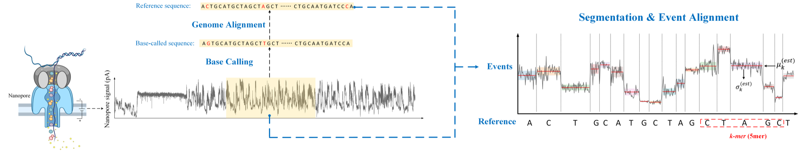
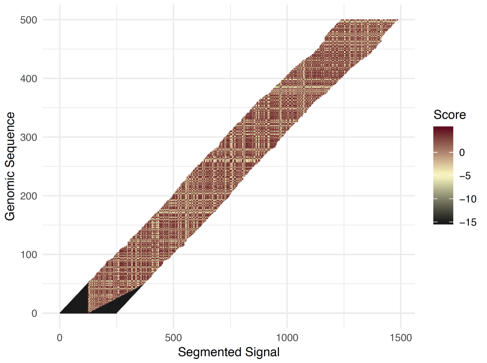
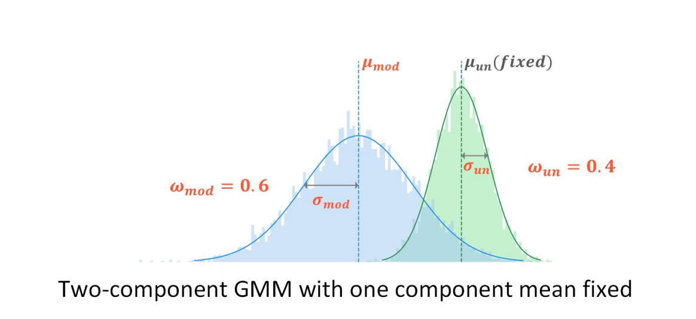

Segmentation & event alignment benchmark
Split the raw current into segments and align each segment to a k-mer of the reference. An aligned k-mer is an “event”, and events are what every modification-detection method reasons about.

After base calling, the read is aligned to the reference. The segmentation and event alignment task then takes the raw signal and the reference sequence, cuts the signal into small fragments, and assigns each fragment to a k-mer at a specific genomic location. For every fragment we obtain its mean and standard deviation; these two statistics drive the evaluation.
Results
| Test dataset | Average std σ̂ (lower is better) | Average log-likelihood L̂ (higher is better) | ||||
|---|---|---|---|---|---|---|
| Nanopolish | Tombo | SegPore | Nanopolish | Tombo | SegPore | |
| hek293t_wt | -2.871 | -3.749 | -2.778 | |||
| hek293t_ko | -2.856 | -3.749 | -2.745 | |||
| hct116 | -2.872 | -3.704 | -2.746 | |||
Baselines: Nanopolish: eventalign v0.14.0 · Tombo: resquiggle v1.5.1 · SegPore: eventalign v1.0. Std bars are scaled within each row; ★ marks the best value in each metric.
SegPore gives the lowest within-event variation and the highest agreement with ONT's k-mer model on all three human RNA datasets; Tombo's resquiggle is the least consistent.
Ground truth and metrics
Segmentation is unsupervised, so there is no ground truth. Oxford Nanopore has, however, trained models on a large proprietary dataset and released a “standard” k-mer parameter table with the expected mean μrefs and standard deviation σrefs of the current for each k-mer s. Two metrics compare each tool's events against it:
- Average std σ̂ of the raw-signal segments over all events and reads. A poorly segmented event mixes current levels and has a large standard deviation, so smaller is better.
- Average log-likelihood L̂ of the estimated event mean μests under the Gaussian with ONT's standard parameters, log N(μests | μrefs, σrefs). An event aligned to the correct k-mer lands near the reference mean, so larger is better.
with N reads and Kn events in read n. Evaluation scripts: segment_align/.
What an eventalign table looks like
contig position reference_kmer read_index strand event_index event_level_mean event_stdv event_length model_kmer model_mean model_stdv standardized_level start_idx end_idx
b|U00096.3|: 0 ATGTCC 4 t 81 71.02 0.582 0.00075 ATGTCC 81.5 2.83 -2.81 429 432
b|U00096.3|: 0 ATGTCC 4 t 82 73.30 0.793 0.00075 ATGTCC 81.5 2.83 -2.20 432 435
b|U00096.3|: 3 TCCGTA 4 t 86 94.26 4.994 0.00175 TCCGTA 91.55 2.13 0.97 447 454
b|U00096.3|: 4 CCGTAG 4 t 87 76.73 1.508 0.0015 CCGTAG 81.09 2.14 -1.55 454 460Each line is one event: the mapped contig and position, the reference k-mer, the estimated mean and std of the segment, and the standard model_mean / model_stdv from ONT's table. NanoBaseLib's combine_nanopolish_eventalign merges the rows of one k-mer into a single event.
Baseline models
Tombo re-squiggle
The re-squiggle algorithm takes a read with raw signal and base calls, maps the base calls to the reference, and assigns raw signal to the reference sequence using an expected current-level model with adaptive banded dynamic programming.

Nanopolish eventalign
Nanopolish's hidden Markov model was designed for consensus calling with 5-mers of a proposed sequence as the backbone and extra states for skipped and split events. Using the reference genome as the backbone instead aligns events to the reference.
SegPore eventalign
SegPore extends the k-mer model by estimating distribution parameters for both the unmodified and modified state of each k-mer, and segments the signal with a hierarchical model before alignment.

References
- Tombo re-squiggle algorithm documentation.
- Simpson, J.T. Aligning Nanopore events to a reference (2015).
- Cheng, G., Vehtari, A. & Cheng, L. Raw signal segmentation for estimating RNA modification from nanopore direct RNA sequencing data. bioRxiv (2024).